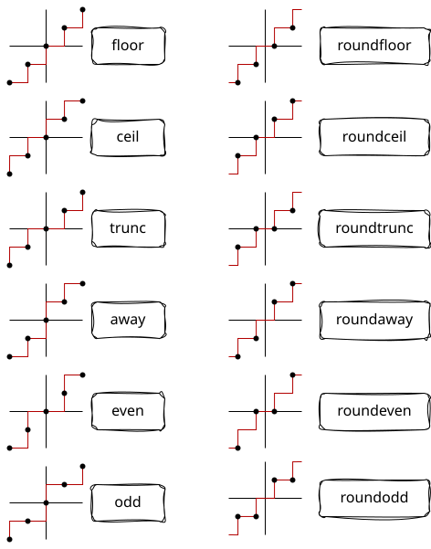

quantize
quantization is such a wide topic.. but for daamath, i have implemented the few most important.
introduction

API implementation
floor(number):
round towards −∞
ceil(number):
round towards +∞
trunc(number):
round towards 0
away(number):
round away from 0
even(number):
round towards the nearest even integer (if not already an integer)
odd(number):
round towards the nearest odd integer (if not already an integer)
roundfloor(number):
round towards the nearest integer, breaking ties towards −∞
roundceil(number):
round towards the nearest integer, breaking ties towards +∞
roundtrunc(number):
round towards the nearest integer, breaking ties towards 0
roundaway(number):
round towards the nearest integer, breaking ties away from 0
roundeven(number):
round towards the nearest integer, breaking ties towards the nearest even integer
this is the recommended rounding method specified by IEEE. pretty cool.
roundodd(number):
round towards the nearest integer, breaking ties towards the nearest odd integer
type signature
these functions take in a real number, and return an integer.
notes
if you need more advanced quantization, the pyquantize project may be useful for you
python has a round function that i despise. it has an optional ndigits parameter that, instead of quantizing to any arbitrary scaled lattice, it scales to quantum sizes of 1, 0.1 ,0.01, ... and on top of that, it will return a float if you provide this ndigits parameter, knowing full well that floats do not round decimal digits cleanly.